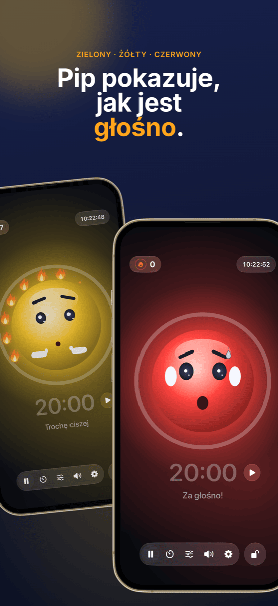

Zarządzanie klasą: plan miejsc, grupy i hałas pod kontrolą
Dobre zarządzanie klasą jest prawie niezauważalne i właśnie o to chodzi: lekcja płynie, przejścia działają, a czas idzie na naukę zamiast na upomnienia. Trzy pytania wracają niemal na każdej lekcji: kto gdzie siedzi? Kto pracuje z kim? I jak głośno może być w tej chwili? Ten poradnik pokazuje sposób pracy, który odpowiada na wszystkie trzy, zanim staną się problemem.
Czym właściwie jest zarządzanie klasą
Zarządzanie klasą to coś więcej niż dyscyplina. Już w latach 70. amerykański psycholog Jacob Kounin wykazał, że skuteczni nauczyciele różnią się nie tyle sposobem reagowania na zakłócenia, ile tym, jak dobrze im zapobiegają. Do opisanych przez niego cech należą:
- Wszechobecność: klasa czuje, że masz całą salę na oku.
- Płynność i tempo: przejścia między etapami nie zabierają minut, a lekcja nie traci rytmu.
- Mobilizowanie grupy: wszyscy pozostają zaangażowani, nie tylko osoba, która akurat odpowiada.
Wiele z tego to postawa i doświadczenie. Część jednak to po prostu organizacja, a tę można przygotować. Tu wkracza poniższy sposób pracy.
Krok 1 · Raz, na początkuUtwórz listę klasy raz i używaj jej wszędzie
Największym pożeraczem czasu jest robienie tego samego dwa razy. Wyeksportuj listę klasy jeden raz jako plik CSV z Excela, Numbers lub Arkuszy Google. Zarówno Platzwahl, jak i Team Losowanie importują ten plik bezpośrednio, a cała klasa jest gotowa w kilka sekund. Obie aplikacje przechowują nazwiska wyłącznie lokalnie na urządzeniu, bez konta i bez chmury. Przy danych uczniów to nie szczegół, lecz warunek.
Krok 2 · FundamentPlan miejsc: zapobiegaj zakłóceniom, zanim się pojawią
Plan miejsc to najskuteczniejsze narzędzie zarządzania klasą, bo działa w każdej minucie bez jednego słowa z twojej strony. To, kto siedzi obok kogo, decyduje o rozmowach, rozproszeniu i koncentracji. Sprawdzone zasady:
- Rozdzielaj niespokojnych uczniów, nie tylko obok siebie, ale też jeden za drugim.
- Wykorzystuj bliskość: uczniowie, którzy potrzebują wsparcia lub łatwo się rozpraszają, siedzą w twoim bezpośrednim polu widzenia.
- Rozmieszczaj spokojne kotwice między bardziej żywiołowymi uczniami.
- Zmieniaj regularnie, na przykład po feriach albo co miesiąc, żeby nie tworzyły się stałe kąty problemów.
W Platzwahl ustalasz te reguły dla każdego ucznia (skłonność do przeszkadzania, miejsce z przodu, wymarzeni sąsiedzi, rozdzielenia), a plan jest obliczany automatycznie. Wynik punktowy pokazuje, na ile wszystkie reguły są spełnione. Gotowy plan trafia na biurko jako PDF.
 Krok 3 · Praca zespołowa
Krok 3 · Praca zespołowa
Sprawiedliwe grupy bez dyskusji
„Możemy sami wybrać?” to pytanie, przez które wiele prac grupowych przepada, zanim się zacznie. Wolny wybór zajmuje czas, utrwala paczki i zawsze zostawia tych samych na lodzie. Celowy podział jest sprawiedliwy, ale pracochłonny i ledwie się opłaca przy dziesięciu minutach pracy w parach.
Przy wielu krótkich etapach najlepszym rozwiązaniem jest losowanie: jest szybkie, nikt nie czuje się faworyzowany, a klasa uczy się współpracować ze wszystkimi. Ważne, żeby losowanie było widoczne. Gdy klasa widzi na projektorze, jak imiona się mieszają, nie ma o czym dyskutować.
W Team Losowanie wybierasz liczbę zespołów, jednym dotknięciem odznaczasz nieobecnych i losujesz. Zespoły można wyświetlić na ścianie albo wyeksportować jako PDF. Przy dłuższych projektach, w których trzeba unikać pewnych połączeń, celowy podział pozostaje lepszym wyborem.
 Krok 4 · Faza pracy
Krok 4 · Faza pracy
Pokaż hałas, zamiast ciągle uciszać
Praca w grupach jest głośna i to jest w porządku. Problem zaczyna się wtedy, gdy nikt już nie wie, co znaczy „za głośno”, a ty spędzasz lekcję na mówieniu „Ciii!”. Upomnienia szybko się zużywają i przerywają właśnie tym, którzy pracują w skupieniu.
Lepiej działają trzy rzeczy:
- Umówcie się co do głośności: ustalcie razem z klasą, co obowiązuje na jakim etapie. Szept przy pracy samodzielnej, głos „do pary” przy pracy w grupach.
- Pokazuj głośność: sygnalizator hałasu na projektorze daje klasie informację zwrotną, którą inaczej musiałbyś przekazywać na głos.
- Nagradzaj ciszę zamiast karać hałas: jeśli sygnalizator tylko zmienia się na czerwony i coś odbiera, szybko staje się narzędziem nacisku, a kilku głośnych uczniów zostaje kozłami ofiarnymi klasy. Lepiej działa wspólny cel, który klasa może osiągnąć.
Właśnie do tego powstał Ruhe: maskotka pokazuje kolor zielony, żółty lub czerwony, a dopóki jest spokojnie, zapala się płomień za płomieniem. Dwanaście płomieni tworzy pełny wieniec i to się świętuje. Progi dla żółtego i czerwonego ustawiasz zależnie od etapu albo pozwalasz, by Ruhe sam się skalibrował. Minutnik pokazuje pozostały czas, widok na projektor wyświetla wszystko w dużym formacie na ścianie, a sterowanie zostaje na twoim iPadzie. Ruhe mierzy tylko głośność; nic nie jest nagrywane.

Krok 5 · ZakończeniePokaż sukcesy
Na koniec lekcji liczy się to, co się udało. Pełny wieniec płomieni to dobra okazja do krótkiej pochwały dla całej klasy. A jeśli dziś się nie udało, to okazja, by wspólnie zastanowić się dlaczego, bez szukania winnych. Powtarzające się problemy przy określonych ławkach to znak, że czas na nowy plan miejsc.
Tak wygląda lekcja z tym sposobem pracy
| Etap | Co się dzieje | Narzędzie |
|---|---|---|
| Przed lekcją | Plan miejsc jest wywieszony, każdy wie, gdzie siedzi. Bez przepychanek o miejsca. | Platzwahl |
| Wprowadzenie | Praca z całą klasą w stałym układzie ławek. | – |
| Przejście | Zespoły są losowane na projektorze, nieobecni są odznaczeni. | Team Losowanie |
| Faza pracy | Sygnalizator hałasu i minutnik działają na projektorze, klasa zbiera płomienie. | Ruhe |
| Podsumowanie | Powrót na stałe miejsca, szybkie spojrzenie na wieniec płomieni. | Ruhe |
Często zadawane pytania
Co oznacza zarządzanie klasą?
Zarządzanie klasą obejmuje wszystko, co robi nauczyciel, aby jak największa część lekcji była rzeczywiście czasem nauki: zasady i rutyny, aranżację sali i plan miejsc, płynne przejścia oraz uwagę skierowaną na całą klasę. Chodzi mniej o reagowanie na zakłócenia, a bardziej o to, by w ogóle nie powstawały.
Co pomaga, gdy klasa jest stale zbyt głośna?
Najpierw ustal z klasą, jaka głośność jest dozwolona na którym etapie. Następnie pokaż głośność, zamiast ciągle upominać, na przykład za pomocą sygnalizatora hałasu na projektorze. Najskuteczniej działa docenianie spokojnych etapów zamiast samego karania hałasu.
Czy sygnalizator hałasu na lekcji ma sens?
Tak, jeśli służy jako wspólny cel, a nie narzędzie kary. Progi powinny pasować do etapu: praca w grupach może być głośniejsza niż samodzielna. Sygnalizator, który nagradza ciszę zamiast karać hałas, sprawia, że pojedynczy głośni uczniowie nie stają się kozłami ofiarnymi klasy.
Dzielić grupy losowo czy celowo?
Oba sposoby mają swoje miejsce. Przy krótkich, częstych etapach w parach lub grupach losowanie jest idealne: szybkie, sprawiedliwe i bez dyskusji, kto z kim. Przy dłuższych projektach lub trudnych układach opłaca się podział celowy. Sam plan miejsc zawsze warto natomiast przemyśleć.